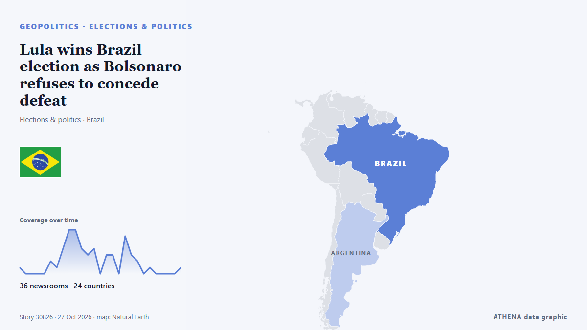

Lula wins Brazil election as Bolsonaro refuses to concede defeat

Rio de Janeiro: Brazil's President Luiz Inácio Lula da Silva, a vocal critic of US President Donald Trump, was reelected Sunday in a result that provides relief to critics of widening US influence in… من Gulf News
نشرته بشكل مستقل 36 مصدرًا في 24 دولة منذ 25 أكتوبر، وأول من نشره The Irish News (Belfast)؛ والتغطية هدأت. يقدّر ATHENA الخطر بأنه منخفض (1.0/10)، ويعود ذلك أساسًا إلى نطاقه الجغرافي والقطاعي وخطورة الضرر الموصوف. الثقة 91٪ (مرتفعة)، وعدد المصادر المستقلة المؤكِّدة: 36، بمتوسط موثوقية للمصادر يبلغ 76٪. وسائل الإعلام حسب البلد: المملكة المتحدة (8), الولايات المتحدة (4), نيجيريا (3). التغطية: من 25 أكتوبر إلى 26 أكتوبر، 34 ساعة.
لماذا يهم: قد تغيّر التطورات الأمنية والدبلوماسية التحالفات والتجارة والأسواق إلى ما هو أبعد بكثير من الدول المعنية مباشرة.
ما الذي تغيّر: 19 تقارير جديدة من 15 غرف أخبار خلال 24 ساعة حتى 27 أكتوبر.
تُعرض العناوين بالإنجليزية كما نُشرت.
نظرة سريعة
اختير وقُيِّم وكُتب وفق منهجية ATHENA المنشورة. لا يتدخل أي محرر في الأحداث بعينها. كيف يُنتَج ›
| 25 Oct 13:26 UTC | 1 |
|---|---|
| 25 Oct 15:26 UTC | 0 |
| 25 Oct 17:26 UTC | 0 |
| 25 Oct 19:26 UTC | 0 |
| 25 Oct 21:26 UTC | 0 |
| 25 Oct 23:26 UTC | 2 |
| 26 Oct 01:26 UTC | 1 |
| 26 Oct 03:26 UTC | 4 |
| 26 Oct 05:26 UTC | 7 |
| 26 Oct 07:26 UTC | 7 |
| 26 Oct 09:26 UTC | 4 |
| 26 Oct 11:26 UTC | 3 |
| 26 Oct 13:26 UTC | 4 |
| 26 Oct 15:26 UTC | 0 |
| 26 Oct 17:26 UTC | 3 |
| 26 Oct 19:26 UTC | 3 |
| 26 Oct 21:26 UTC | 0 |
| 26 Oct 23:26 UTC | 6 |
| 27 Oct 01:26 UTC | 3 |
| 27 Oct 03:26 UTC | 2 |
| 27 Oct 05:26 UTC | 0 |
| 27 Oct 07:26 UTC | 1 |
| 27 Oct 09:26 UTC | 0 |
| 27 Oct 11:26 UTC | 0 |
| 27 Oct 13:26 UTC | 0 |
| 27 Oct 15:26 UTC | 0 |
| 27 Oct 17:26 UTC | 1 |
| 26 Oct 03:20 UTC | 0.0 |
|---|---|
| 26 Oct 14:23 UTC | 1.5 |
| 27 Oct 17:53 UTC | 1.0 |
لماذا هذه الأرقام
الأهمية
الخطر
الثقة
التغطية — من نشر الخبر ومتى
العنوان كما نُشر · يفتح الأصل- The Irish News (Belfast) · المملكة المتحدةClose contest expected as Lula takes on Bolsonaro’s son in Brazilian election
- CBC News · كنداLula re-elected in Brazil as Bolsonaro rejects results
- Belfast Telegraph · المملكة المتحدةLula is declared winner of Brazil’s election as Bolsonaro rejects results
- TASS (English) · روسياPresidential candidate Bolsonaro urges to annul Brazilian elections’ results
- Express Tribune · باكستانBrazil’s Lula wins historic fourth term, Flavio Bolsonaro refuses to concede
- Fortune · الولايات المتحدةTrump critic Lula wins reelection, saying Brazil is not ‘anyone’s backyard,’ while Bolsonaro asks for results to be annulled
- MercoPress · أورغوايBolsonaro refuses to recognise Lula’s victory and says he will seek to annul the election
- Al Jazeera English · قطرBolsonaro calls for Brazil election result to be annulled
- Gulf News · الإمارات العربية المتحدةLula wins Brazil election as Bolsonaro refuses to concede defeat
- Baltic News Network · لاتفياTight presidential race ends in Brazil – Lula wins as Bolsonaro plans legal challenge
- Channels TV · نيجيرياBrazil’s Lula Clinches Poll Victory, Bolsonaro Seeks To Annul Election
- IOL · جنوب أفريقيا‘A victory for democracy’: Lula supporters celebrate Brazil election win
- ABC News Australia · أسترالياLula celebrates unlikely victory in Brazil as Bolsonaro rejects results
- TheJournal.ie · أيرلنداBrazil election: Left-wing President Lula scores surprise victory over Flávio Bolsonaro
- The New Arab · INTBrazil's Lula wins, Flavio Bolsonaro refuses to concede
- Vanguard · نيجيرياBrazil’s Lula clinches poll victory, Bolsonaro seeks to annul election
- The Korea Times · كوريا الجنوبيةBrazil's Lula wins historic fourth term, Flavio Bolsonaro refuses to concede
- The Irish News (Belfast) · المملكة المتحدةLula is declared winner of Brazil’s election as Bolsonaro rejects results
- Africanews (English) · AFRBrazil's Lula clinches re-election, Bolsonaro calls to annul vote
- Punch · نيجيرياBrazil’s Lula clinches poll victory, Bolsonaro seeks to annul election
- The Independent · المملكة المتحدةTrump ally Bolsonaro refuses to concede defeat as Lula triumphs in neck-and-neck Brazilian election
- Al Jazeera English · قطرFlavio Bolsonaro ‘will not give up’ after Brazil election results
- Haaretz (English) · إسرائيل'Fraud': Netanyahu minister disputes Brazil election as Israeli leaders denounce Lula
- SABC News · جنوب أفريقياSAFTU welcomes Lula da Silva’s election victory in Brazil
- Helsinki Times · فنلنداLula wins Brazil presidential election as Bolsonaro refuses to accept defeat
- The New York Times (World) · الولايات المتحدةWhat to Know About Brazil’s Election, and What Comes Next
- The Independent · المملكة المتحدةLula deals Trump a blow with Brazil election victory that ends Latin America’s right-wing streak
- France 24 English · فرنساLula beats Bolsonaro in Brazil runoff: What does it mean for Donald Trump?
- PBS NewsHour · الولايات المتحدةIncumbent Lula is declared winner of Brazil's election as Bolsonaro rejects results
- MercoPress · أورغوايA judge appointed by Jair Bolsonaro rejects his son’s case for annulling the election
- The Guardian · المملكة المتحدةFirst Thing: Brazil re-elects Lula in comeback rebuke for Bolsonaro and far right
- ABC News (International) · الولايات المتحدةLula secures victory in Brazil, but faces challenge as Bolsonaro contests victory
- Agência Brasil (English) · البرازيلFlávio Bolsonaro rejects Lula’s victory, seeks to annul election
- The Irish News (Belfast) · المملكة المتحدةLula secures Brazil election win but faces hurdle as Bolsonaro contests results
- Belfast Telegraph · المملكة المتحدةLula secures Brazil election win but faces hurdle as Bolsonaro contests results
- The Korea Times · كوريا الجنوبيةLula mobilized millions to win Brazil's election, while Bolsonaro contests victory
- NDTV · الهندBrazil's Flavio Bolsonaro Says Court Banned Him From Leaving Country
- The Straits Times · سنغافورةFlavio Bolsonaro says Brazil federal police asked for his passports
- Buenos Aires Times · الأرجنتينFlávio Bolsonaro says court banned him from leaving Brazil
- Free Malaysia Today · ماليزياBrazil’s Flavio Bolsonaro says court banned him from leaving country